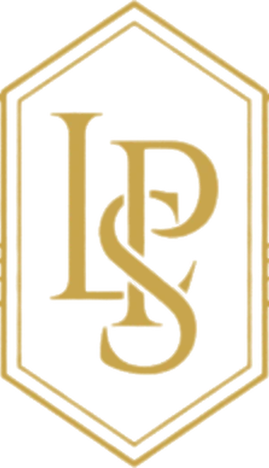
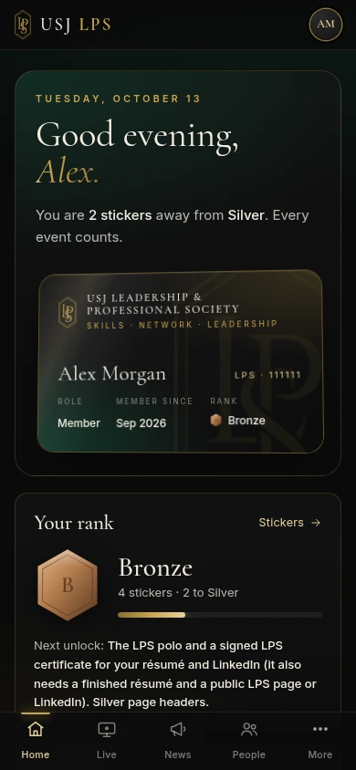
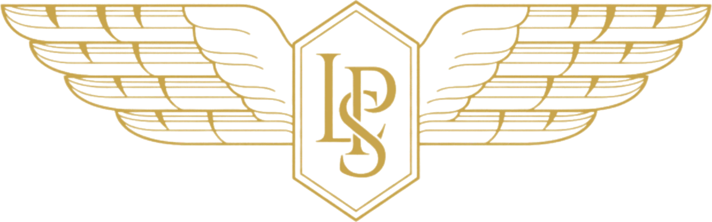

01 CONVERSATIONS
HEADLINER
SERIES
Meet professionals, hear their stories and ask the questions that matter.
PERSPECTIVE •

LPSExplore careers, build practical skills and meet people across majors.
EXPLORE MEMBERSHIP ↗DISCOVER LPS ↓You don’t have to know exactly where you’re going. You just have to start.
LPS is a proposed student-led community for exploring careers, building practical skills and meeting people across majors. A place to ask, try, learn and find your next step.
A community built across majors, with room for every path.
Connecting to the LPS portal…
New perspectives. Real conversations. The kind of experience that stays with you.
EXPLORE THE PROGRAMS ↘Different paths, one place to explore. These are some of the formats proposed for the Society.
Meet professionals, hear their stories and ask the questions that matter.
Explore short challenges inspired by careers across industries.
Try decisions, communication and interviews in a space made for learning.
The Board Meeting
Discuss decisions and different perspectives.
Know Yourself
Explore your leadership style.
Interview Lab
Practice interviews and receive feedback.
Personal Brand
Build your professional story.
Night at LPS
Connect with the community.
Take part, build confidence and find new ways to contribute. Recognition and member benefits are subject to review and availability.
VIEW RECOGNITION DETAILS ↗Join a community of curious minds.
Try new ideas and meet new people.
Practice skills and find your voice.
Help shape what comes next.
Events earn stickers in your portal. As you participate, you can progress through the LPS ranks.
LPS lapel pin and sticker.
LPS polo and a verifiable Certificate of Achievement.
Certificate with Distinction and priority access to select events.
Highest Distinction and opportunities to connect and co-host.
Recognition and rewards are subject to review, funding, availability and event capacity.
EXPLORE ALL RANK DETAILS ↗Explore your profile, follow your participation, build your résumé and stay connected with the community.
OPEN MEMBER PORTAL ↗Interface shown with demonstration data. Features subject to availability.
Practical tools and opportunities, together in one place.
Turn your experience into a résumé, preview it and download Word or PDF.
Share your experience, education and projects on your LPS page.
Follow stickers and ranks, request rewards and access your certificate.
Suggest events, respond to polls and explore leadership opportunities.
Features shown as described on the current LPS website; availability may vary.
For students finding their direction, guests sharing their experience and a campus community creating opportunities.

EVERY MAJOR.
ONE SOCIETY.
See the latest published events and find your next opportunity to connect.
VIEW EVENT CALENDAR ↗Event details and availability are maintained in the member calendar.ADVISOR · KAREN SCULLY
MORE ABOUT THE BOARD ↗Whatever your path, there’s room to grow together.
EXPLORE MEMBERSHIP ↗